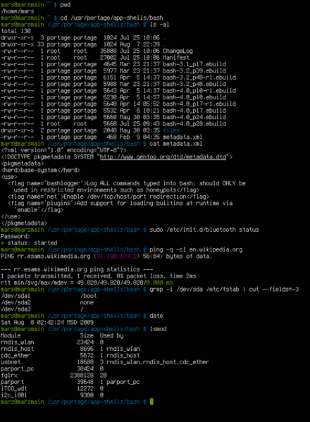
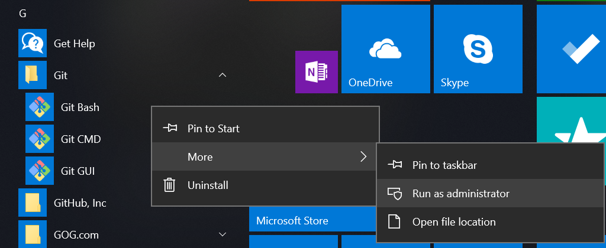

Appendix A — The shell
Even if you do most of your Git operations via a client, such as RStudio or GitKraken, you must sometimes work in the shell. As you get more comfortable with Git, you might prefer to do more and more via the command line. You might also need to use Git or file system operations on a server that lacks your usual Git client. For all these reasons, it is a good idea to learn your way around the shell.
Here’s a typical look for a shell. You’ll see a simple blinking cursor, waiting for input:

A.1 What is the shell?
The shell is a program on your computer whose job is to run other programs. Pseudo-synonyms are “terminal”, “command line”, and “console”. There’s a whole StackExchange thread on the differences (What is the difference between Terminal, Console, Shell, and Command Line?), but I don’t find it to be terribly enlightening. Your mileage may vary.
Many programmers spend lots of time in a shell, as opposed to in GUIs, because it is very fast, concise, and ubiquitous in their relevant computing environments. This is how all work was done before we got the mouse and GUIs.
The most common shell is bash and it gets thrown around as a proxy for “shell” sometimes, just like “Coke” and “Kleenex” are proxies for cola and tissues.
In Happy Git, sometimes we demo the use of a shell for certain tasks, like navigating the file system and doing Git operations, when we don’t want to or can’t use RStudio. Providing shell commands is also less ambiguous and less perishable than describing human interactions with a GUI.
A.2 Starting the shell
A.2.1 From within RStudio
You can launch a shell from RStudio. This is often handy, because RStudio makes every effort to put you in a sane working directory, i.e. in the current project.
There are two ways:
- Tools > Terminal launches a shell within RStudio, graphically and process-wise. I believe this is usually what you want.
- Tools > Shell … launches a shell external to RStudio.
A.2.2 Outside of RStudio
A.2.2.1 macOS
The shell is often called the “terminal” on macOS, by which people mean Terminal.app. One way to launch is via Spotlight Search. Type Command + space and start typing “terminal”. This process will something like so:

Terminal.app is typically located at /Applications/Utilities/Terminal.app.
Opening Terminal.app brings you to a bash shell opened to your home directory ~/, which is shorthand for /Users/YOURUSERNAME. You should see something like this:

If you have administrative rights on your computer, prefacing any command with sudo will allow you to run the command as an administrator. Expect to be challenged for your password. If you need to change administrative privileges or your password, see this article from Apple.
A.2.2.2 Windows
We defer this until the next section, due to the more complex shell situation on Windows.
A.3 Windows is special … and not in a good way
Windows is not the ideal platform for scientific computing and software development. A lot of the functionality is going to feel janky and strapped on. Because it is.
There are no fewer than 4 possible shells you can end up in. Unless you know better, you almost certainly want to be in a Git Bash shell, especially here in Happy Git.
Windows users will want to understand the different types of shell, how to launch them, and how to tell which one you’re in.
A.3.1 Git Bash
TL;DR how to tell if you’re in a Git Bash shell? Do this:
$ echo $SHELL
/usr/bin/bashGit Bash is a bash shell that ships with Git for Windows, which is the Happy Git way to install Git on Windows. Therefore, you will not have Git Bash on your system until you install Git for Windows.
Git Bash is always the Windows shell we are targeting in Happy Git instructions.
RStudio should automatically detect the presence of Git Bash. You can inspect and influence this directly via Tools > Global Options > Terminal. Unless you have good reason to do otherwise, you want to see “Git Bash” in the “New terminals open with …” dropdown menu.

Troubleshooting tips:
- Restart RStudio. You need to restart all instances of RStudio after installing Git for Windows (+ Git Bash), in order for RStudio to auto-detect Git Bash.
- Update RStudio. The shell handling in RStudio has improved dramatically over time, so older versions might not behave as described here.
A.3.1.1 Accessing Git Bash outside of RStudio
Sometimes you want to run Git Bash outside of RStudio. Here’s the easiest way: click the “Git” menu in the Windows menu and select “Git Bash”.

A Git Bash shell running outside of RStudio looks something like this:

Notice MSYS in the title bar. You might also see MINGW64.
Sometimes you need to run Git Bash as administrator, e.g. to run with higher privileges. Easiest way: click the “Git” menu in the Windows menu and right-click on “Git Bash”. This reveals a submenu. Select “more” and then “Run as administrator”.

A.3.2 Command prompt
TL;DR how to tell if you’re in Command Prompt? Do this:
C:\Users\jenny>echo %COMSPEC%
C:\WINDOWS\system32\cmd.exeThis is the native Windows command line interpreter. It’s rarely what you want, especially for the work described in Happy Git.
A Command Prompt session running outside of RStudio looks something like this:

Notice the cmd.exe in the title bar, although it is not always present. You might also see “Command Prompt”.
If you get an error message such as 'pwd' is not recognized as an internal or external command, operable program or batch file. from a shell command, that suggests you have somehow launched into cmd.exe when you did not mean to.
A.3.3 PowerShell
TL;DR how to tell if you’re in PowerShell? Do this:
PS C:\Users\jenny> Get-ChildItem Env:ComSpec
Name Value
---- -----
ComSpec C:\WINDOWS\system32\cmd.exePowerShell is yet another Windows shell, a more modern successor to Command Prompt. It’s also rarely what you want, especially for the work described in Happy Git.
A PowerShell session running outside of RStudio looks something like this:

Notice the powershell.exe in the title bar.
A.3.4 Bash via Windows Services for Linux
TL;DR how to tell if you’re in Bash via WSL? Do this:
$ echo $SHELL
/bin/bashIn 2016, Microsoft launched the Windows Subsystem for Linux (WSL), “a new Windows 10 feature that enables you to run native Linux command-line tools directly on Windows”. Overall, this is a fantastic development. However, at the time of writing (January 2019), you will only have this if you’re running Windows 10 64-bit and have chosen to install the optional WSL system component. Therefore, I expect only keeners to have this and, in that case, you probably don’t need this chapter.
A WSL bash shell running outside of RStudio looks something like this:

FYI Microsoft also refers to WSL as Bash on Ubuntu on Windows.
A.3.4.1 Windows bottom line
When in doubt, you probably want to be in a Git Bash shell.
A.4 Basic shell commands
The most basic commands are listed below:
pwd(print working directory). Shows directory or “folder” you are currently operating in. This is not necessarily the same as theRworking directory you get fromgetwd().ls(list files). Shows the files in the current working directory. This is equivalent to looking at the files in your Finder/Explorer/File Manager. Usels -ato also list hidden files, such as.Rhistoryand.git.cd(change directory). Allows you to navigate through your directories by changing the shell’s working directory. You can navigate like so:- go to subdirectory
fooof current working directory:cd foo - go to parent of current working directory:
cd .. - go to your “home” directory:
cd ~or simplycd - go to directory using absolute path, works regardless of your current working directory:
cd /home/my_username/Desktop. Windows uses a slightly different syntax with the slashes between the folder names reversed,\, e.g.cd C:\Users\MY_USERNAME\Desktop.- Pro tip 1: Dragging and dropping a file or folder into the terminal window will paste the absolute path into the window.
- Pro tip 2: Use the
tabkey to autocomplete unambiguous directory and file names. Hittabtwice to see all ambiguous options.
- go to subdirectory
- Use arrow-up and arrow-down to repeat previous commands. Or search for previous commands with
CTRL+r.
{kind=link}
A few Git commands:
git statusis the most used git command and informs you of your current branch, any changes or untracked files, and whether you are in sync with your remotes.git remote -vlists all remotes. Very useful for making suregitknows about your remote and that the remote address is correct.git remote add origin GITHUB_URLadds the remoteGITHUB_URLwith nicknameorigin.git remote set-url origin GITHUB_URLchanges the remote url oforigintoGITHUB_URL. This way you can fix typos in the remote url.- Feel free to suggest other commands that deserve listing in a GitHub issue.